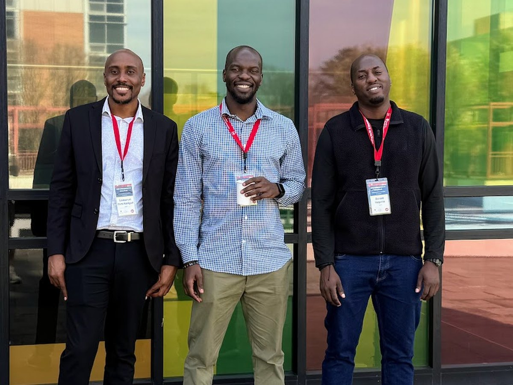

Flagship · Co-founded venture
AXAM — Offline AI Education Platform
An AI tutor that runs with no internet and no cloud — so student data never leaves the building.
An offline, AI-powered education platform for schools with limited connectivity, privacy constraints or focus challenges. It runs entirely on low-compute devices and never connects to the internet — acting as a Student Learning Companion (plain-language tutoring in algebra and English) and a Teacher's Toolbox (auto-generating lesson plans, handouts and differentiated materials that save teachers hours a week).
On-device AIFERPAPrivacy by designEdTech